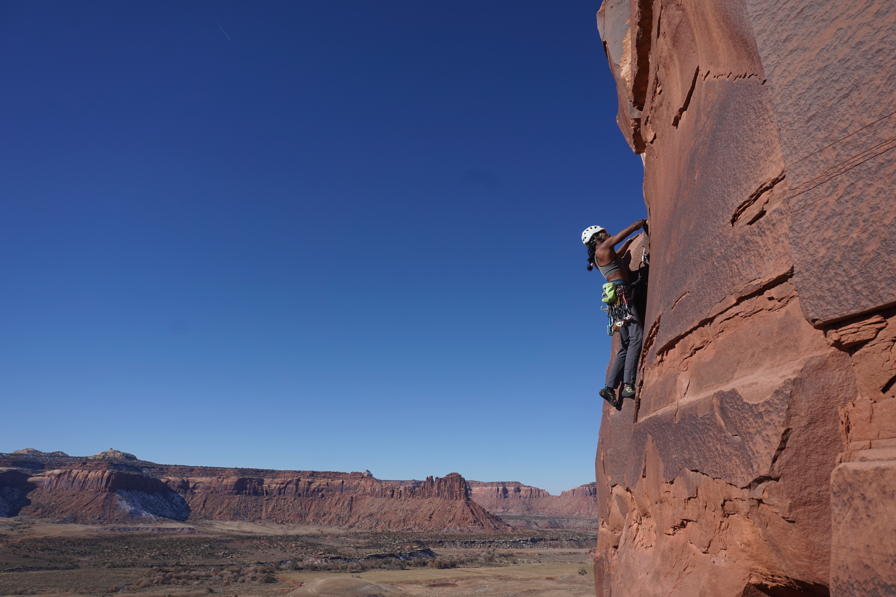

Murti Nauth
Space plasma physicist, Los Alamos National Laboratory (starting Oct 2026)
Space plasma physicist, Los Alamos National Laboratory (starting Oct 2026)
Spacecraft explore places humans simply cannot. Whether it's an atmosphere's composition, the magnetic field's configuration, or the pattern of craters on a surface, these observatories teach us about the environments of Earth's planetary neighbors and how they are connected to the Sun.
My PhD research used data from NASA's MAVEN mission to study electron acceleration in the Martian magnetotail, the region where the Sun's magnetic field drapes around the planet much like it does around a comet. Understanding what happens there tells us how Mars interacts with the Sun, and helps us extrapolate how other unmagnetized bodies (Venus, planets beyond our solar system, etc.) interact with their host stars.
Robotic explorers go places humans cannot; working together allows us to uncover the solar system's mysteries.
I started studying Mars as an undergraduate research assistant at the Laboratory for Atmospheric and Space Physics at the University of Colorado Boulder. Now, as an incoming postdoctoral researcher at Los Alamos National Laboratory, I use my training in space plasma physics to study solar electron bursts at Earth. This work is in support of NASA's IMAP mission as part of the Solar Wind Electron (SWE) instrument team.
As a visiting astronomer at Black Canyon of the Gunnison National Park's AstroFest (2022), I gave a series of "porch talks" on life on Mars and helped guide public telescope observing across the three-day festival, reaching hundreds of visitors.
For several years, I worked at Boulder's Fiske Planetarium: operating the 8K dome, giving talks, running the portable dome for K-12 students, and producing laser light shows. This experience helped make the distant world of astronomy feel closer to people of all ages and circumstances.

I'm Guyanese -American and a proud first-generation college student. My path towards research was not linear. At university, I studied international affairs and economics, and realized that such a career was not sustainable for a low-income student. Planetary science research helped me build a meaningful career in a subject I'm passionate about and without financial sacrifice. In a field where the "leaky pipeline" of academia loses too many capable students along the way, I have been fortunate.
My success in this career is due to all the compassionate mentors who guided me as both a scientist and a person. For my family to go from a lack of literacy to graduate degrees in just two generations is a testament to the importance of mentorship and outreach. Therefore, I am driven to inspire students and educate the public beyond academia.

Climbing has taught me to move through unusual spaces, literally and otherwise. I wrote an essay for Rock and Ice Magazine (now Climbing Magazine) on how climbers can actively pursue anti-racism.
If you'd like to connect, email me at murtinauth@berkeley.edu.